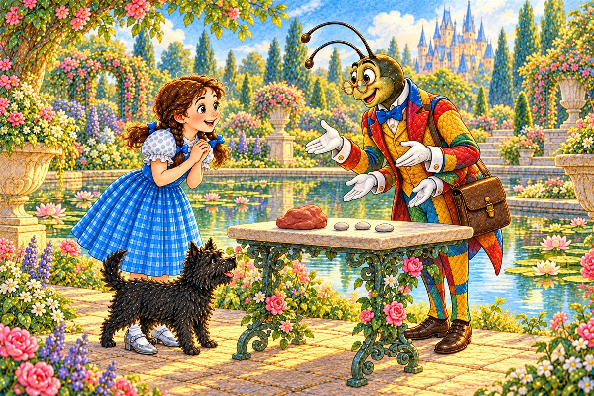
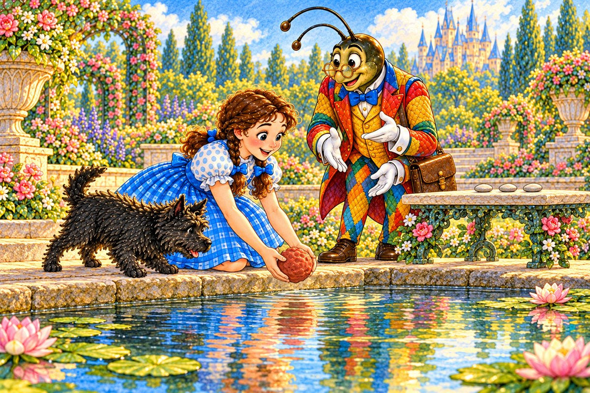
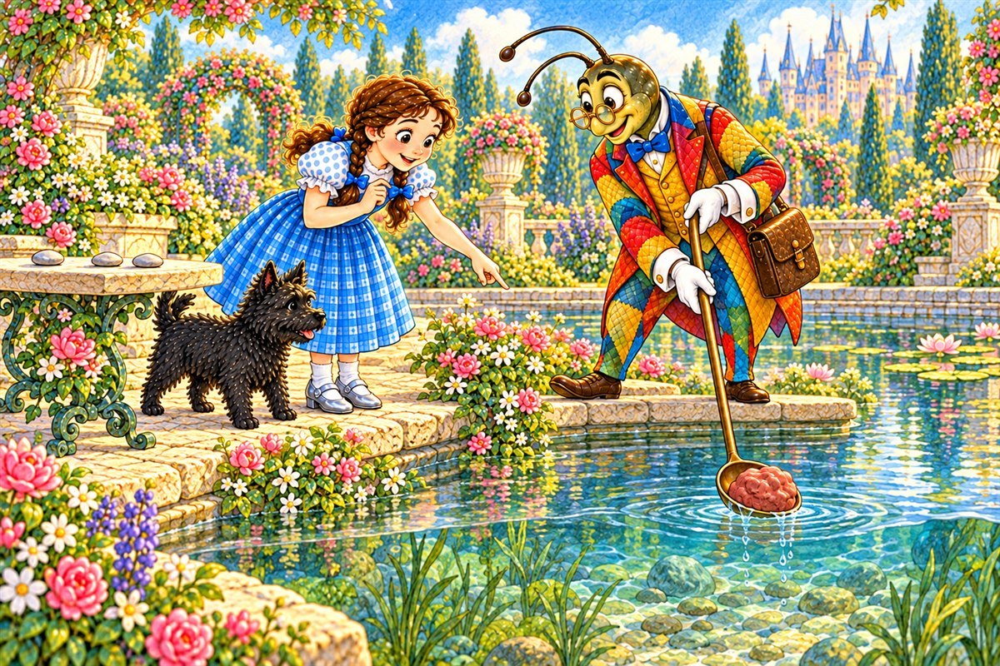
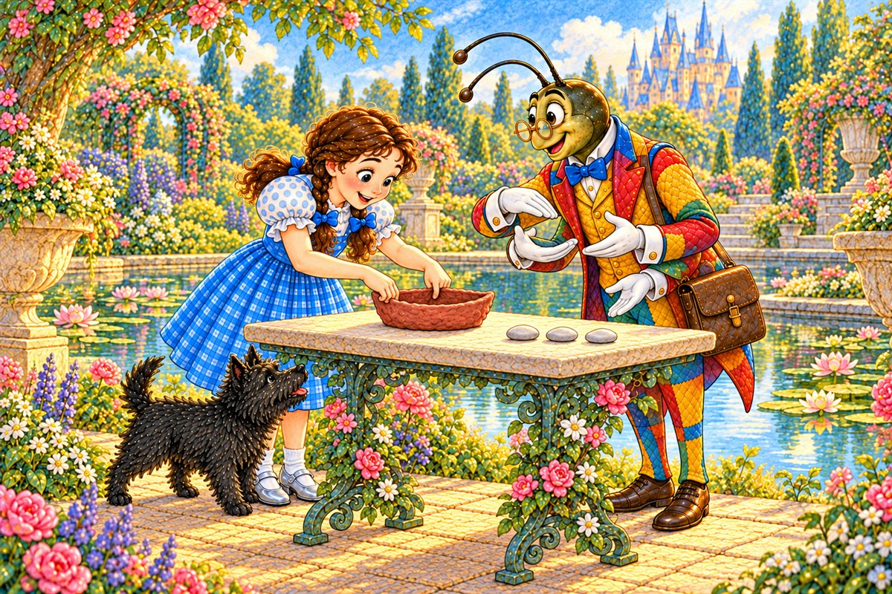
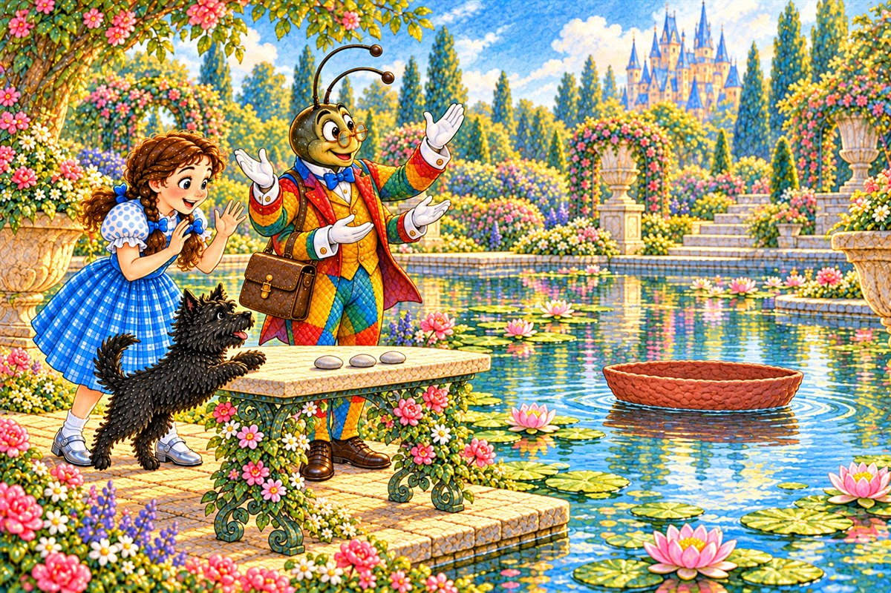
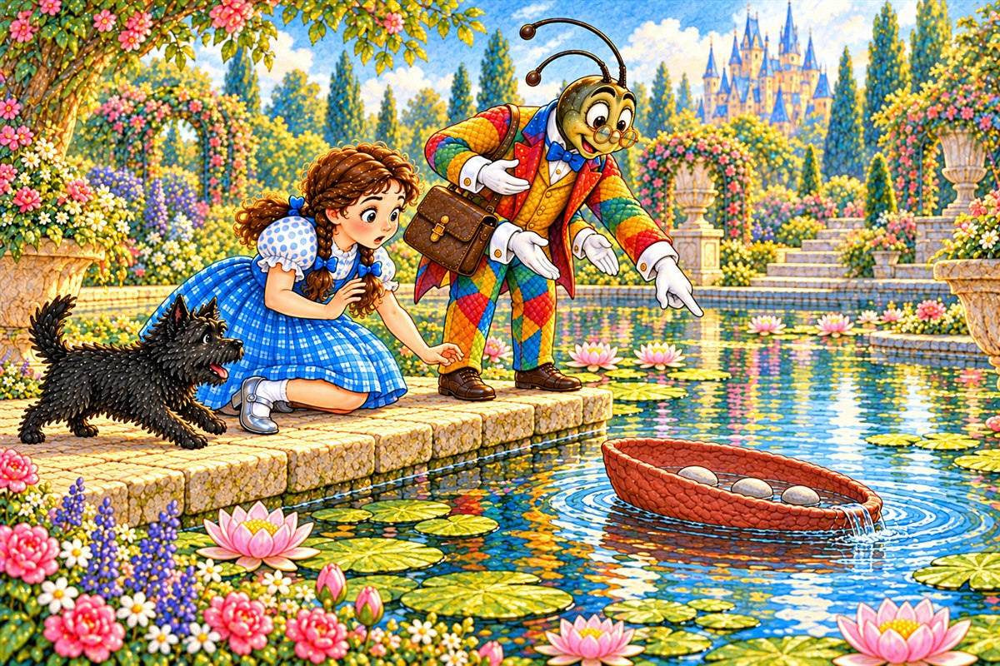
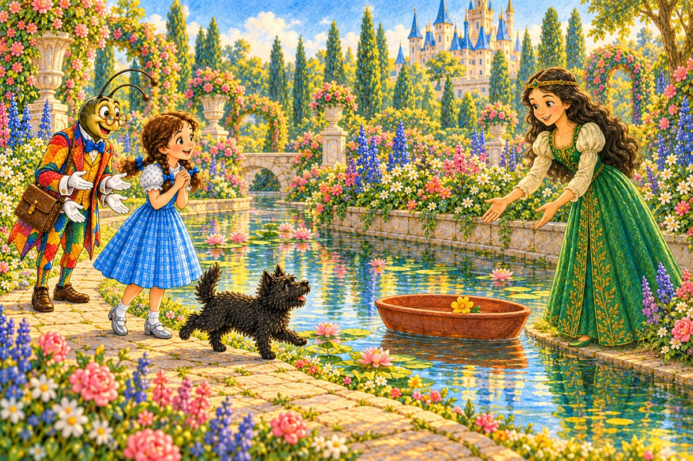

Pahina 1
Kinaumagahan, pumunta sina Dorothy at Toto sa lawa.
Naghihintay si Propesor Wogglebug na may dalang luwad at tatlong bato.
Isang bagong pagsubok sa Lupain ng Oz
Basahin ang tatlong bagong pahina bawat araw. Bago magpatuloy, balikan muna ang mga pahinang nabasa na.

Kinaumagahan, pumunta sina Dorothy at Toto sa lawa.
Naghihintay si Propesor Wogglebug na may dalang luwad at tatlong bato.
“Palulutangin natin ang luwad,” sabi ng propesor.
Hinawakan ni Dorothy ang bilog na luwad.
Mabigat ito.
Inamoy ni Toto ang luwad.

“Lulutang ba ito o lulubog?” tanong niya.
“Lulubog,” hula ni Dorothy.
Maingat niyang inilagay ang bilog na luwad sa tubig.

Agad itong lumubog.
Tumingin si Toto sa tubig at tumahol.
Kinuha ng propesor ang luwad gamit ang kutsara.

“Iisang luwad, ibang hugis,” sabi niya.
Pinatag ni Dorothy ang luwad.
Pinisil niya ang gitna at tinaasan ang mga gilid.
Naging munting bangka ito.

Inilagay niya ang bangka nang patag sa tubig.
Hindi ito lumubog.
Lumulutang ang luwad!
Masayang tumalon si Toto sa tabi ng lawa.
“Subukan natin ang karga,” sabi ng propesor.
Inilagay ni Dorothy ang isang puting bato sa bangka.
Bumaba ito nang kaunti ngunit lumutang pa rin.
Dinagdagan niya ng ikalawang bato.
Mas mababa na ang bangka.
“Kaya pa nito,” sabi ni Dorothy.
Tahimik na nagmasid si Toto.

Inilagay niya ang ikatlong bato.
Umabot ang tubig sa gilid.
Pumasok ang tubig, at lumubog ang bangka kasama ang tatlong bato.
Muling kinuha ng propesor ang luwad.
Ginawa nilang mas malapad ang bangka at mas mataas ang gilid.
Dalawang bato lamang ang inilagay nila.
Dumating si Ozma na may dilaw na bulaklak.
Pinalitan niya ng bulaklak ang mga bato.
Marahang itinulak ni Dorothy ang bangka papunta kay Ozma.

Lumutang ang bangka patungo kay Ozma.
Tumakbo si Toto sa paligid ng lawa.
“Tumulong ang hungkag na hugis. Ngunit lulubog ito kapag sobra ang karga,” sabi ni Ozma.
Pag-usapan natin